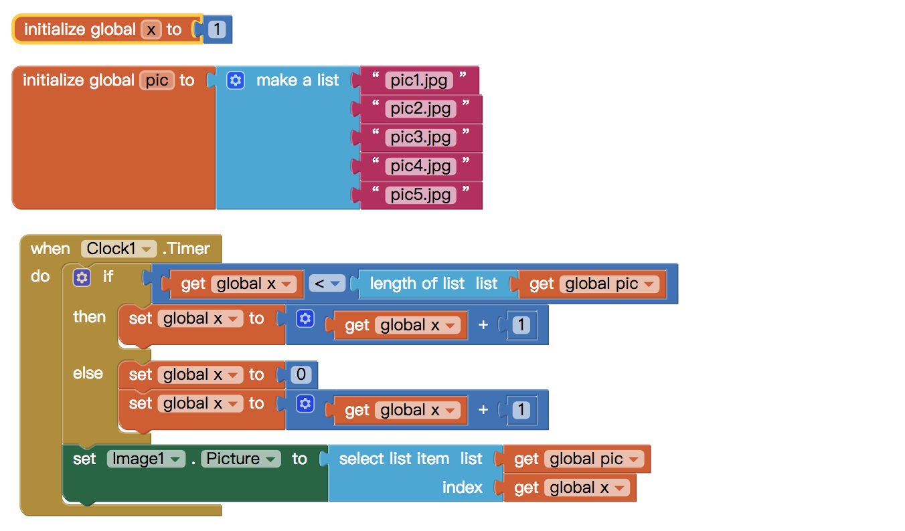

Sweety Cabinet
提供大眾選擇甜點及認識甜點身後歷史文化的新方式！
Sweety Cabinet 是一個以甜點為主的工具程式app，就像其本身的名字一樣Sweety Cabinet 是甜的櫥櫃之意，而此app是能讓更多人了解各式各樣的甜點及其歷史背景與文化。
12我們將app的功能分為主要四項：1.今日推薦2.認識甜點3.我的最愛4.推薦咖啡廳。
亞洲大學視覺傳達設計1Ａ
亞洲大學視覺傳達設計1Ａ

網頁及app設計真的需要大家一起同心協力，集思廣益，更重要的是組員之間要能互相配合，各司其職完成任務，才能順利進展。很高興藉由這次課程，我們得以接觸各類的軟體和程式，包括網頁的撰寫方式，以及軟體應用。看著組員彼此互相學習使用軟體，我覺得可以激發自己學習的動力，我認為這是一個非常好的現象。組員兼相輔相成，整個團隊才能夠有所進步。